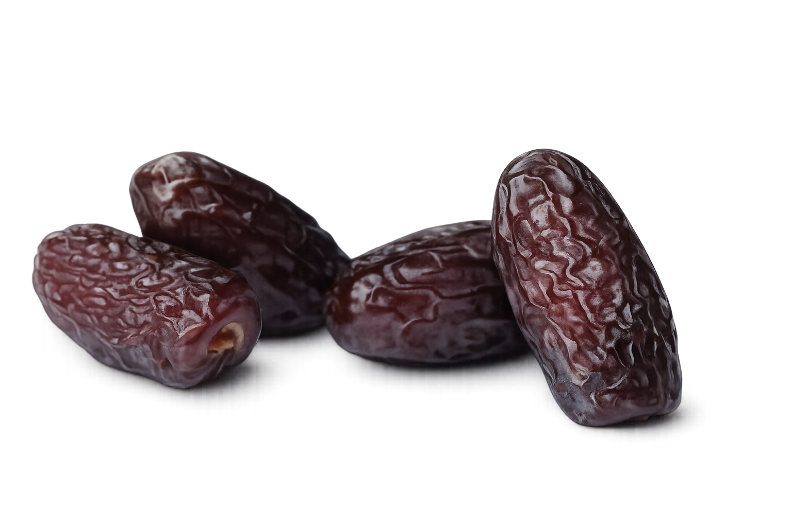
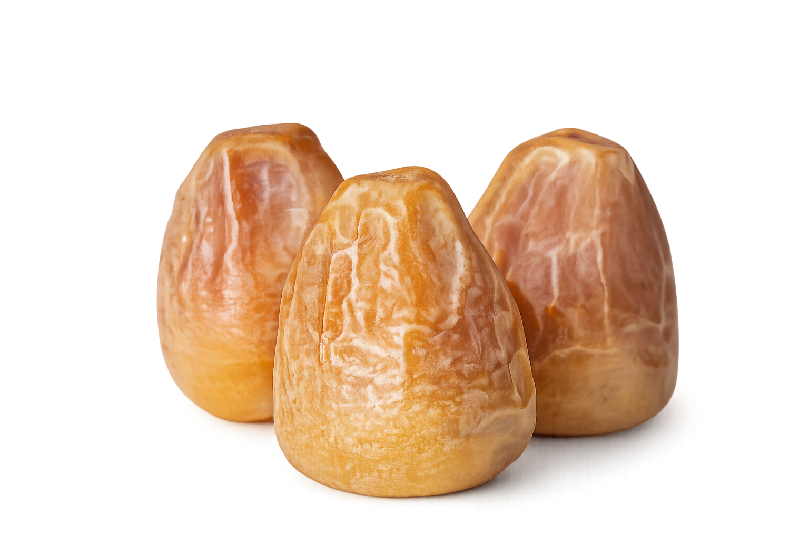
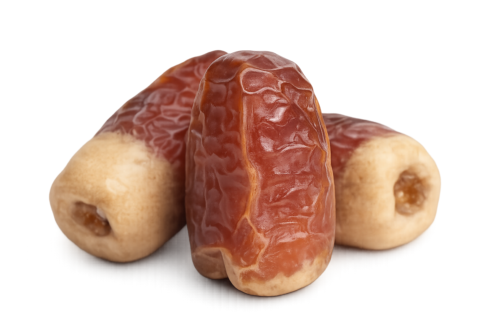
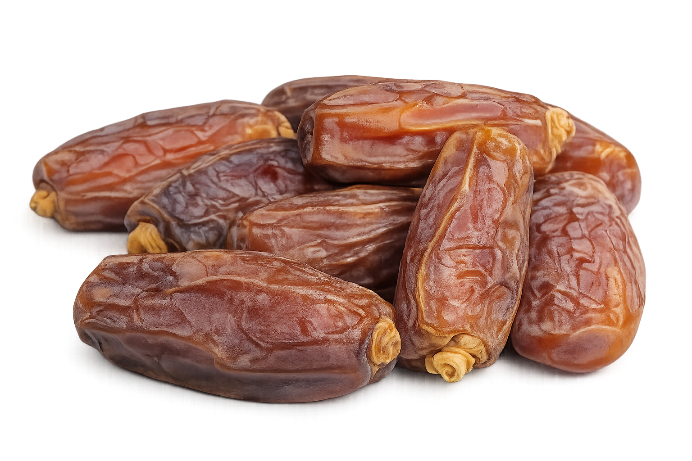
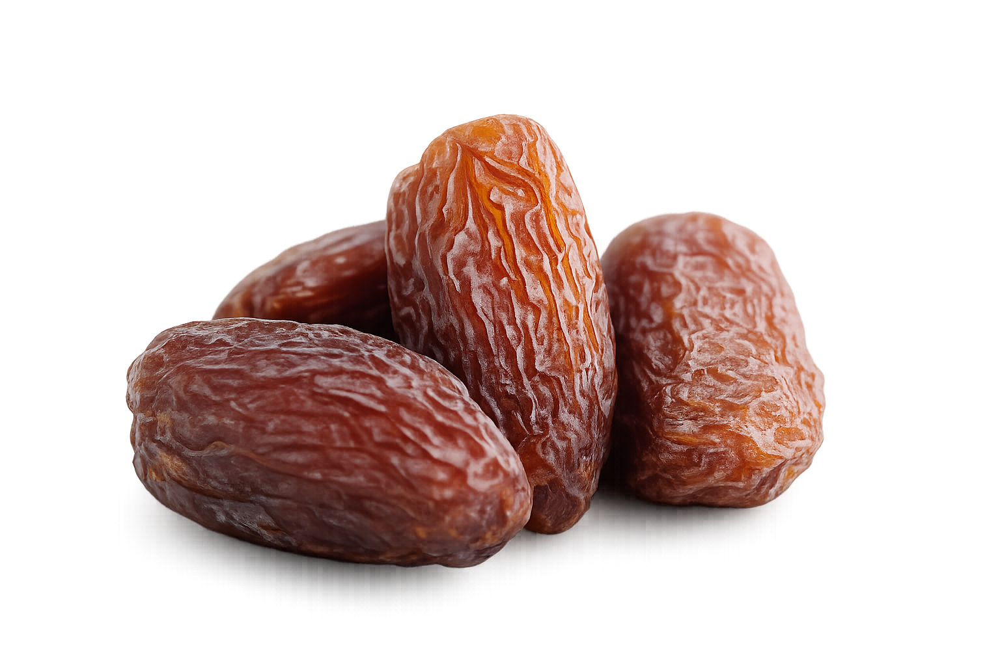
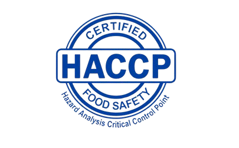

من نخيل المملكة العربية السعودية، نصدر الجودة إلى كل ركن في العالم بأسلوب احترافي ومعايير عالمية.

تأسست شركة عذق الوطن عام 2015 مقرها الرئيسي المملكة العربية السعودية - الرياض.
تُعد شركة عذق الوطن شركة رائدة في إنتاج وتوزيع التمور في الشرق الأوسط والعالم.
تمتلك الشركة عدة مزارع في منطقة القصيم والمدينة المنورة.
تمتلك الشركة فريق تسويق وتوزيع يغطي معظم أنحاء العالم.
تشتهر عذق الوطن بتشكيلتها الواسعة من التمور الطازجة والمجففة بالإضافة إلى العديد من المنتجات الثانوية.
تلتزم الشركة بالحفاظ على أعلى معايير الجودة مما يعزز مكانتها في السوق ويرسخ موقعها كخيار مفضل لدى المستهلكين.
تستند جودة تمور عذق الوطن إلى بيئة زراعية فريدة حيث تقع مزارعنا في أراض معروفة بخصوبة تربتها وتوازنها المعدني الطبيعي مما يوفر بيئة مثالية تعزز من إنتاج التمور ذات الجودة العالية والقيمة الغذائية المتميزة.
توريد وتصدير مختلف أنواع التمور السعودية إلى الأسواق العالمية وفق المواصفات الدولية
حفظ التمور في مستودعات مجهزة للحفاظ على الجودة والطعم والقوام والقيمة الغذائية
فرز التمور حسب الحجم والجودة والرطوبة لضمان جوده الشحنات ورضا المستورد
تنظيم الشحن البحري والجوي وإعداد المستندات التصديرية (الفاتورة التجارية، شهادة المنشأ، شهادة صحية، بوليصة الشحن)
توفير خيارات متعددة من العبوات (كرتون - علب فاخرة - عبوات تجزئة) حسب طلب العميل والعلامة التجارية
توفير كميات تجارية كبيرة للموزعين والمستوردين بشكل مستمر طوال العام
تجهيز المنتج باسم وشعار العميل وتصميم الملصقات والباركود وفق متطلبات بلد الاستيراد
تطبيق معايير السلامة الغذائية وإجراء اختبارات الجودة قبل الشحن





تبدأ رحلتنا في تقديم أجود أنواع التمور بالاختيار الدقيق لأجود أنواع التمور من مزارعنا، حيث يتم فرز كل تمرة يدوياً للحفاظ على أعلى معايير الجودة العالمية وضمان التميز.
نولي عناية فائقة في تغليف تمورنا باستخدام أساليب مبتكرة تلتزم بأعلى المعايير العالمية من حيث الجمال والحداثة والصحة لضمان تقديم منتج يليق بعملائنا.
تُخزن التمور المختارة في مرافق تبريد حديثة جداً للحفاظ على نضارتها وقيمتها الغذائية ثم تُغلف بأحدث التقنيات لضمان تقديمها في أفضل حالة غذائية وجمالية.
تحرص شركة عذق الوطن على تطبيق منظومة متكاملة لإدارة الجودة وسلامة الغذاء وذلك وفق المعايير والأنظمة الدولية المعتمدة عالمياً في قطاع الصناعات الغذائية.

تحليل المخاطر ونقاط التحكم الحرجة
وفق مواصفات (ISO 9001:2015) و (ISO 22000:2018)
ويشمل ذلك جميع مراحل سلسلة الإمداد بدءاً من اختيار المحصول من المزارع مروراً بعمليات الفرز والمعالجة والتعبئة والتخزين المبرد وانتهاءً بعمليات الشحن والتصدير.
استكشف التراث العريق، الفوائد الصحية المذهلة، والأثر العالمي لذهب الصحراء السعودي عبر مقالاتنا المتخصصة.

لطالما كانت التمور هي العمود الفقري للحياة العربية لآلاف السنين، تعرف على تاريخ هذه الشجرة المباركة...
استكشف القصة
لماذا تعتبر التمور وجبة غذائية كاملة لجسم الإنسان، وما هي المعادن والفيتامينات التي توفرها...
تعرف أكثر
كيف تقود المملكة العالم في تصدير التمور عالية الجودة، ودور هذا القطاع في تحقيق رؤية 2030...
اقرأ التحليل
من العجوة إلى السكري والمبروم، تعرف على كيفية التمييز بين أفضل الأنواع الفاخرة في السوق...
شاهد الأنواعنحن لسنا مجرد مصدرين للتمور؛ نحن شريكك الاستراتيجي في نقل التراث السعودي بمعايير عالمية تضمن لك الريادة في سوقك المحلي والدولي.
نطبق أعلى معايير سلامة الغذاء الدولية في كافة مراحل الإنتاج، من المزرعة وحتى وصول الشحنة النهائية إليكم.
تمتلك عذق الوطن شبكة لوجستية ضخمة تضمن وصول تمورنا الطازجة إلى أي مكان في العالم بدقة واحترافية.